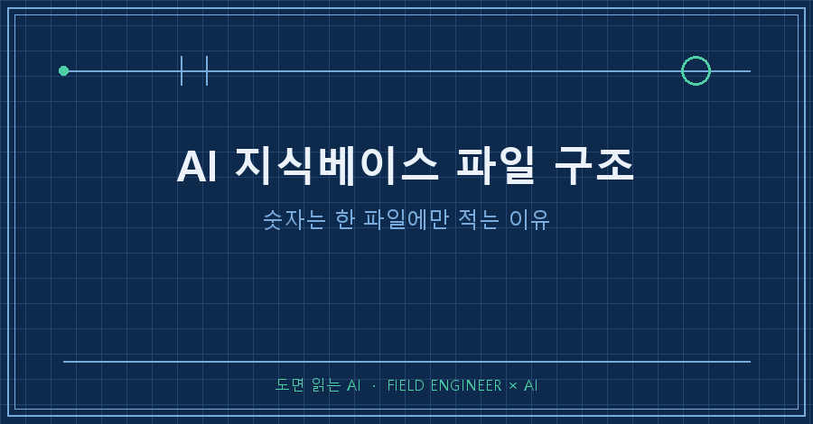
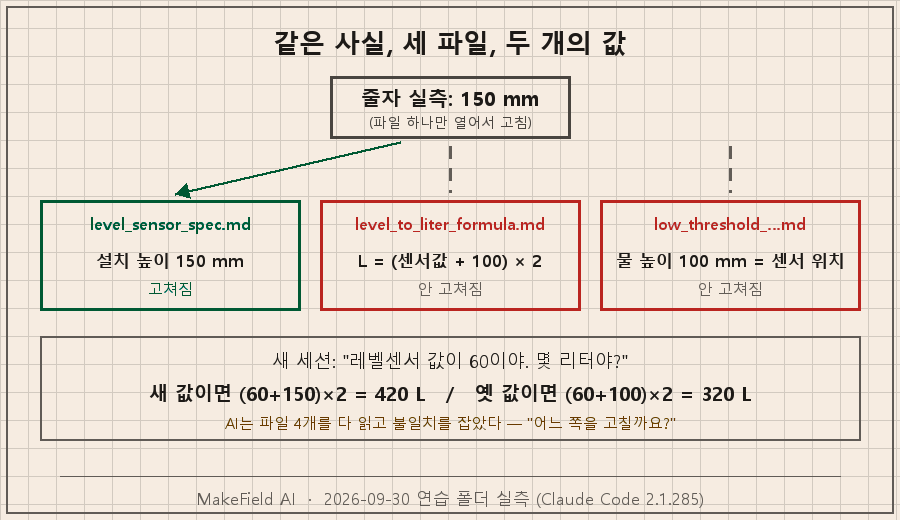
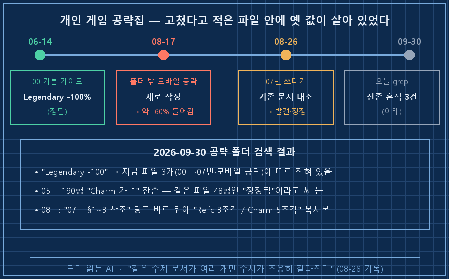
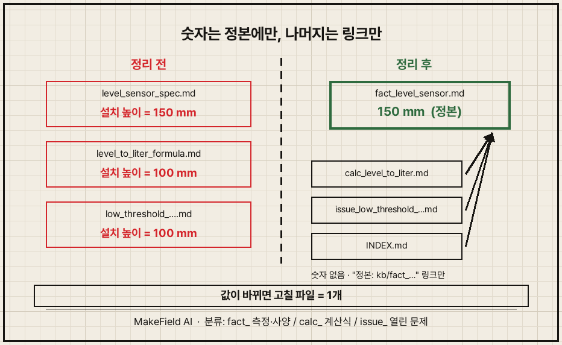
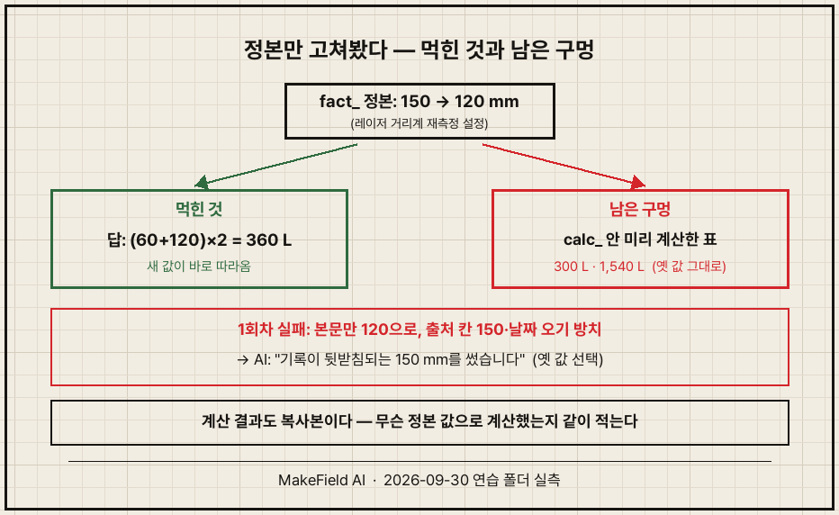

AI 지식베이스 파일 구조는 세 줄 규칙이면 됩니다. 사실 하나당 정본 파일은 딱 하나이고, 숫자는 그 정본에만 적습니다. 다른 파일은 숫자를 베끼지 않고 "정본: kb/파일명" 링크만 겁니다. 여기에 파일 이름 앞 분류(fact_·calc_·issue_)와 목록 파일 INDEX.md 한 장을 더하면 끝이에요. 이 규칙 없이 파일을 쪼개면, 같은 숫자가 여러 파일에서 따로따로 늙어갑니다.
지난 편에서 좋은 답을 kb/ 폴더의 지식 파일로 올렸죠. 이번 편은 그 파일들을 어떻게 나누고, 값이 바뀌면 어디를 고치는지 다룹니다.
공장 설비 제어로 15년째 밥벌이를 하고, 퇴근 후엔 제 PC에 AI 작업 환경을 조금씩 짓고 있어요. 아래 화면은 전부 2026년 9월 30일 연습 폴더에서 Claude Code(2.1.285)로 돌린 그대로입니다. 이번에도 AI 자동 메모리는 끄고 돌렸어요.
1. 파일 하나만 고쳤더니 숫자가 두 개가 됐어요
연습 폴더는 지난 편 끝 상태 그대로입니다. kb/에 물탱크 레벨센서 관련 파일이 4개 있어요. 그중 "센서가 탱크 바닥에서 100 mm 위에 달려 있다"는 사실이 핵심이었죠.
그런데 줄자로 재보니 150 mm였다고 해봅시다. 사람이 제일 흔하게 하는 행동은 이거예요. 센서 설명 파일 하나를 열어서 숫자를 고친다. 저도 그렇게 했습니다. 그리고 숫자를 검색해봤어요.
> grep -rn "100\|150" kb/ (줄임)
kb/level_sensor_spec.md:8: - 센서 설치 위치: 탱크 바닥에서 **150 mm** 위
kb/level_sensor_spec.md:10: - 실제 물 높이(mm) = 센서값(mm) + 150
kb/level_to_liter_formula.md:7: - 환산식: **L = (센서값 + 100) × 2**
kb/level_to_liter_formula.md:8: - +100: 센서 설치 높이
kb/low_threshold_at_sensor_position.md:4: ... 실제 물 높이 100 mm = 센서 위치라서같은 사실인데 150이 한 파일, 100이 두 파일입니다. 환산식 파일이 설치 높이를 자기 안에 숫자로 베껴두고 있었던 거예요. 이 상태에서 새 세션을 열고 물었습니다.
> 레벨센서 값이 60이야. 몇 리터야? 저수위 알람 떠야 하는 상황이야?
센서값 60은 420 L입니다. 저수위 알람 상황은 아닙니다.
(kb/level_sensor_spec.md 2026-09-30 실측값 기준)
## kb 파일끼리 값이 서로 다릅니다
환산식 파일이 옛날 값 그대로입니다. ... 옛날 식으로 계산하면 320 L가 나옵니다.
그래도 알람 기준 아래는 아니라서 결론은 같습니다.
...
kb 정리: level_to_liter_formula.md와 low_threshold_at_sensor_position.md를
150 mm 기준으로 고칠까요?솔직히 말하면 제 예상보다 AI가 잘했어요. 질문을 바꿔 한 번 더 돌려도 똑같이 420 L를 내고 불일치를 짚었습니다. 파일이 4개뿐이라 다 열어볼 수 있었으니까요.
그래도 두 가지가 남아요. 하나, 이번엔 320이든 420이든 알람 기준(200 L) 위라 결론이 같았을 뿐입니다. 둘, 결국 "어느 파일을 고칠까요?"라는 숙제가 저한테 돌아왔어요. 그리고 제 진짜 KB는 오늘 기준 529개입니다. 이 규모면 AI가 매번 전부 열어보길 기대하긴 어렵습니다.

2. 제 게임 공략집에선 아무도 못 잡았습니다
이번엔 실제로 당한 얘기예요. 저는 모바일 게임 공략을 AI랑 같이 파일로 정리해둡니다. 폴더 하나에 00_게임시스템_기본가이드.md부터 08_...까지 번호 붙은 파일이 있고, 폴더 밖에 타이탄퀘스트_모바일_공략.md라는 큰 파일이 하나 따로 있어요.
최고 난이도(Legendary)에선 캐릭터 저항이 깎입니다. 6월 14일에 만든 기본 가이드엔 "Legendary −100%"라고 맞게 적혀 있었어요. 그 뒤 8월 17일에 폴더 밖 모바일 공략을 새로 만들었는데, 8월 26일에 열어보니 거기엔 "약 −60%"가 들어가 있었습니다.
아이템 강화 공략을 새로 쓰면서 기존 문서를 대조하다가 걸린 거예요. 그날 기록에 이렇게 남아 있습니다.
교차검증: 같은 폴더 00_게임시스템_기본가이드.md line 140에 이미
"Epic −40%/Legendary −100%"로 정확히 적혀 있었음
→ 모바일 공략만 어긋나 있던 드리프트였다.
교훈: 같은 주제 문서가 여러 개면 수치가 조용히 갈라진다.−60을 믿고 저항을 맞추면 40만큼 모자란 채로 최고 난이도에 들어가는 셈이죠. 같은 날 "부적(Charm) 조각 수 = 가변 3~8"이라는 표기도 "5조각"으로 고쳤습니다.
오늘 이 글을 쓰면서 공략 폴더를 다시 검색해봤어요.
- "Legendary −100"은 지금 파일 3개(00번·07번·모바일 공략)에 따로 적혀 있습니다.
- 05번 파일 190행에는 "Charm 가변"이 아직 한 줄 남아 있었어요. 같은 파일 48행에선 "가변 3~8 표기는 정정됐다"고 써놓고요..
- 08번은 "07번 §1~3 참조"라고 링크를 걸어놓고, 바로 뒤에 "요약: Relic 3조각 / Charm 5조각"을 또 베껴뒀습니다.
고쳤다고 적은 파일 안에 옛 값이 살아 있고, 링크 옆에 복사본이 붙어 있어요. 제 공략집은 아직 정본 규칙으로 정리가 안 된 상태라는 뜻입니다. 여러분 폴더에도 같은 숫자가 두 군데 적힌 파일, 하나쯤 있지 않나요?

3. 정본(SSOT) 규칙, 실제로 이렇게 시켰습니다
정본(SSOT, Single Source of Truth)이란 어떤 사실의 값을 적는 유일한 파일입니다. 값이 바뀌면 그 파일 하나만 고치면 되고, 나머지는 그 파일을 가리키기만 해요.
연습 폴더로 돌아가서, 값이 갈라진 상태 그대로 이렇게 쳤습니다.
> kb/ 파일끼리 같은 사실이 여러 곳에 적혀 있어서 값이 갈라졌어.
설치 높이는 오늘 줄자로 잰 150mm가 맞아. 이렇게 정리해줘.
1) 사실 하나당 정본 파일은 딱 하나. 숫자는 정본에만 적는다.
2) 다른 파일은 숫자를 베끼지 말고 '정본: kb/파일명' 링크만 건다.
3) 파일 이름 앞에 분류를 붙인다: fact_ (측정·사양) / calc_ (계산식) / issue_ (열린 문제).
4) kb/INDEX.md 에 파일마다 한 줄 요약.
5) CLAUDE.md 에 이 규칙을 짧게 추가하고 .history 도 남겨.
임계값 파일과 코드는 건드리지 마.폴더가 이렇게 바뀌었어요.
kb\
├── INDEX.md 파일마다 한 줄 요약
├── fact_level_sensor.md 센서 단위 mm, 설치 높이 150 mm ← 정본
├── fact_tank_a_dimensions.md 바닥 크기, 물 높이 1 mm당 2 L ← 정본
├── calc_level_to_liter.md 환산식 (숫자 없이 기호로)
└── issue_low_threshold_below_sensor.md 저수위 알람 문제 (결정 전)제일 달라진 건 환산식 파일이에요. (센서값 + 100) × 2처럼 숫자를 박아두던 식이 기호로 바뀌었습니다.
## 입력값 (숫자는 여기 적지 않음)
| 기호 | 뜻 | 정본 |
|------|------------------|-------------------------------|
| H | 센서 설치 높이 | kb/fact_level_sensor.md |
| k | 물 높이 1mm당 L | kb/fact_tank_a_dimensions.md |
## 식
- L = (센서값 + H) × kAI는 값이 갈라진 원인도 짚었습니다. "예전 센서 파일은 본문에 150, 출처 칸에 100이 적혀 있었습니다. 환산식 파일은 100을 그대로 베껴 쓰고 있었습니다." 제가 한 파일 안에서도 칸 하나를 덜 고쳤던 거예요.
덤으로 AI가 먼저 짚은 게 있어요. "어제 드린 '센서 620 → 1,440 L' 답은 틀렸습니다. 맞는 값은 1,540 L입니다." 설치 높이가 바뀌면 예전 계산 결과도 같이 바뀐다는 거죠. 반면 100 mm가 적힌 지난 작업 기록(.history)은 "지난 로그라서 고치지 않았습니다"라며 그대로 뒀습니다.
CLAUDE.md에 붙은 규칙은 세 줄이에요.
## kb 규칙
- 사실 하나당 정본 파일 하나. 숫자는 정본에만 적고, 다른 파일은 `정본: kb/파일명` 링크만 건다
- kb 파일명 앞에 분류: fact_ (측정·사양) / calc_ (계산식) / issue_ (열린 문제)
- kb 파일을 추가·변경하면 kb/INDEX.md 에 한 줄 요약을 맞춘다정리 직후 새 세션에서 같은 질문을 던지니, 답이 "약 420 L, 알람 안 뜬다" 하나로 나오고 근거로 "환산식 정본: kb/calc_level_to_liter.md"를 달았습니다.
4. 분류 축은 "무엇이 바뀌면 이 파일이 바뀌나"로 잡습니다
AI 지식베이스 파일 구조에서 주제별로 쪼개는 것만으론 부족해요. 어떤 기준으로 쪼갰는지가 파일 이름에 보여야 검색할 때 헤매지 않습니다. 저는 "이 파일은 무엇 때문에 바뀌나"를 축으로 삼았어요.
| 접두어 | 담는 것 | 바뀌는 계기 | 연습 폴더 예시 |
|---|---|---|---|
| fact_ | 측정값·사양 | 다시 재거나 사양이 바뀔 때 | 설치 높이, 탱크 바닥 크기 |
| calc_ | 계산식 | 식 자체가 틀렸을 때만 | 센서값 → 리터 |
| issue_ | 아직 안 정한 문제 | 결정이 나면 닫힘 | 저수위 알람이 안 울리는 문제 |
이렇게 나누면 "설치 높이가 바뀌었다"는 소식이 왔을 때 열어야 할 파일이 fact_ 하나로 좁혀져요. 계산식 파일은 숫자를 안 들고 있으니 건드릴 필요가 없고요.
게임 공략집에서도 사실 같은 판단을 한 적이 있습니다. 8월 26일에 아이템 강화 문서를 새로 만들 때 "05번 = 어디서 뭐가 떨어지는지, 07번 = 강화 규칙, 06번 = 빌드"로 역할을 나눠 겹치지 않게 했거든요. 그런데 폴더 밖에 떨어져 있던 모바일 공략 한 개는 이 역할 분담 바깥에 있었고, 드리프트가 거기서 났습니다. 분류 밖 파일이 제일 위험해요.

5. 정본만 고쳐봤습니다 — 그리고 남은 구멍
규칙이 진짜 먹히는지 보려고, 정리된 폴더에서 정본 파일 하나만 다시 고쳐봤어요. 레이저 거리계로 다시 쟀더니 120 mm였다는 설정입니다(줄자 값은 브래킷 두께까지 잰 거였다고요).
첫 시도는 제가 망쳤습니다. 본문 숫자만 120으로 바꾸고, 같은 파일 아래 출처 칸의 "줄자로 잰 150mm"는 그대로 뒀어요. 날짜도 실수로 내일 날짜(10-01)를 적었고요. AI의 답은 이랬습니다.
같은 파일의 출처·검증 칸, calc 파일, 오늘자 .history는 모두 150 mm입니다.
게다가 10-01은 내일 날짜입니다.
그래서 위 계산에는 기록이 뒷받침되는 150 mm를 썼습니다.정본을 하나로 만들어도, 그 파일 안에서 칸 하나를 빼먹으면 또 갈라집니다. 그리고 AI는 여러 기록이 가리키는 쪽, 즉 옛 값을 골랐어요. 맞는 판단이지만 제 의도와는 반대였죠.
두 번째는 제대로 했습니다. 본문·출처·검증 칸을 전부 120으로, 날짜도 오늘로요. 결과는 이렇습니다.
센서 60이면 약 360 L 있고, 저수위 알람은 뜨지 않습니다.
| H (센서 설치 높이) | 120 mm | kb/fact_level_sensor.md |
calc_level_to_liter.md의 계산 결과 표가 옛날 값 기준입니다.
센서 0일 때 300 L, 센서 620일 때 1,540 L라고 적혀 있고,
120 mm 기준으로는 각각 240 L와 1,480 L가 맞습니다.
그래서 표 대신 정본 값으로 직접 계산했습니다.파일 하나만 고쳤는데 답이 새 값(360 L)으로 바로 따라왔어요. 정본 규칙은 먹혔습니다.
그런데 새 구멍이 보였죠. 환산식 파일 안에 미리 계산해둔 결과표가 있었고, 그 표는 옛 값으로 남아 있었어요. 계산 결과도 결국 숫자의 복사본이었던 겁니다. 그래서 연습 폴더 규칙에 한 줄을 더 붙였습니다. "계산 결과를 적어둘 땐 어느 정본 값으로 계산했는지 같이 적고, 정본이 바뀌면 다시 계산한다."

6. 도구가 달라도 같고, 자주 받는 질문
이번 AI 지식베이스 파일 구조에 쓴 건 폴더 하나, 마크다운 파일 몇 개, 규칙 세 줄입니다. Codex CLI(GPT)나 Gemini CLI에서도 같은 방식으로 됩니다. 규칙 파일 이름만 AGENTS.md, GEMINI.md로 바뀌고 kb/ 폴더와 INDEX.md는 그대로 옮겨 쓰면 돼요.
Q. 한 파일에 한 주제면 파일이 너무 많아지지 않나요?
많아집니다. 그래서 INDEX.md가 필요해요. 사람은 목록 한 장만 보면 되고, AI한테도 "INDEX부터 보고 필요한 파일만 열어"라고 시킬 수 있어요. 파일 수보다 무서운 건 같은 숫자가 두 군데 있는 것이에요.
Q. 접두어 대신 폴더로 나누면 안 되나요?
됩니다. 폴더도 분류 축이에요. 다만 제 공략집처럼 폴더 밖에 떨어진 파일이 드리프트 자리가 되기 쉽고, 접두어는 검색 결과 한 줄에 분류가 같이 찍혀서 저는 이쪽을 씁니다.
Q. .history에 적힌 옛 숫자도 고쳐야 하나요?
아니요. 작업 기록은 "그때 이렇게 알고 있었다"는 사실이라 고치면 오히려 거짓이 됩니다. 정본만 새 값으로 고치고, 기록엔 "언제 왜 바꿨다"를 새로 남기면 됩니다.
적용 전에 이것만 확인해보세요.
- [ ] 같은 숫자를 검색했을 때 kb/에서 한 파일만 나오나
- [ ] 계산식 파일이 숫자 대신 "정본: kb/..." 링크를 들고 있나
- [ ] 정본을 고칠 때 본문·출처·검증 칸을 같이 고쳤나
- [ ] 미리 계산해둔 결과표에 "무슨 값으로 계산했는지"가 적혀 있나
다음 편은 규칙 쪽입니다. 오늘 kb/에 적용한 "한 곳에만 두고 나머지는 가리킨다"를 CLAUDE.md 같은 규칙 파일에도 똑같이 걸어야 하는데, 규칙은 숫자보다 더 조용히 충돌하거든요. 전역·프로젝트·역할 규칙 파일을 어떻게 나눴는지 풀어볼게요.
파일 몇 개로 AI 작업 환경을 짜는 과정은 makefield.ai에 순서대로 올려두고 있어요.
태그: #AI지식베이스파일구조 #KB파일설계 #정본SSOT #SingleSourceofTruth #클로드코드KB정리 #AI지식베이스 #개인지식베이스 #문서드리프트 #한파일한주제 #클로드코드CLAUDEmd #AGENTSmd #ClaudeCode #CodexCLI #GeminiCLI #비개발자AI